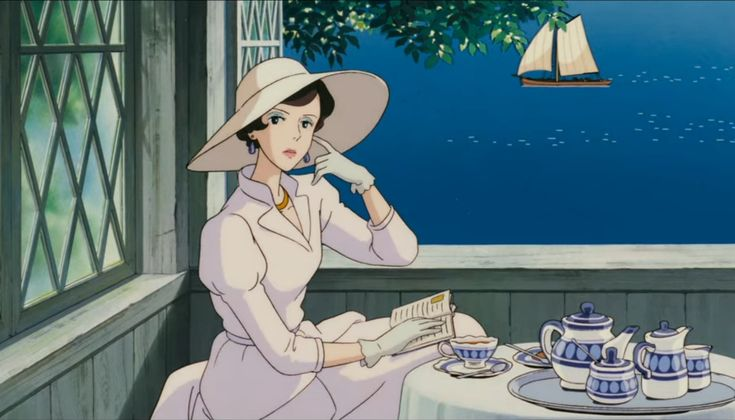

Porco Rosso

Porco Rosso is a thrilling, witty, and beautifully nostalgic Studio Ghibli adventure set over the Adriatic Sea during the 1930s. The film follows Marco Pagot, a legendary Italian World War I fighter ace who was mysteriously cursed with the face of a pig and now works as a cynical bounty hunter named Porco Rosso, chasing down sky pirates. When a brash American rival shoots down his beloved red seaplane, Porco enlists the help of Fio, a brilliant and spirited young female aircraft engineer, to rebuild his plane and restore his pride. Blending exhilarating aerial dogfights, romantic golden-age nostalgia, and deep anti-war themes, the film is a charming, wonderfully stylish celebration of honor, friendship, and the freedom of the open skies.
Spirited Away

Spirited Away is a deeply magical, Academy Award-winning masterpiece that follows Chihiro, a sullen ten-year-old girl who accidentally wanders into a mysterious, abandoned theme park with her parents. After her mother and father are turned into giant pigs by a sorceress named Yubaba, Chihiro discovers that she has crossed over into a sprawling, vibrant bathhouse realm populated by gods, spirits, and ancient monsters. To survive and find a way to save her parents, she must give up her name, become "Sen," and take a grueling job cleaning the bathhouse. Guided by Haku, a mysterious young boy who can transform into a majestic dragon, and meeting unforgettable characters like the gentle No-Face and the multi-armed Kamaji, Chihiro undergoes an incredible journey of courage, maturity, and friendship to break the bathhouse curses and win back her freedom.